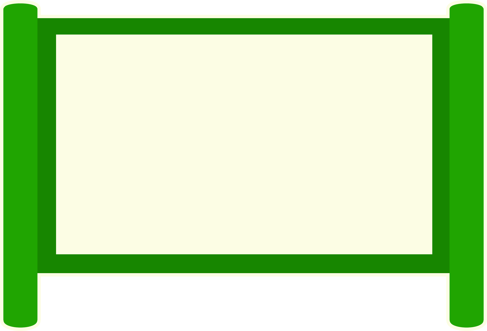
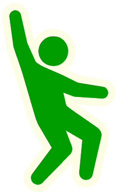

最後に
このサイトを作るきっかけや作ってみての感想を書いています。


サイトを作成して
東日本大震災が起きた時、僕は5歳でした。
テレビのニュースで見た、津波に飲み込まれた家が衝撃的で今でもよく覚えています。
しばらくして、東日本大震災の10倍ほどの規模だと言われている南海トラフ巨大地震のことを耳にし、僕の災害への意識は強くなりました。
防災の情報を調べるにつれて、避難の後のことについてあまり考えていないことに気づき、知識をつけて広めたい！と思い、このサイトを作りました。
新しいことを調べるのは大変でしたが、見てくれた人がが防災を見直すきっかけになったら幸いです。